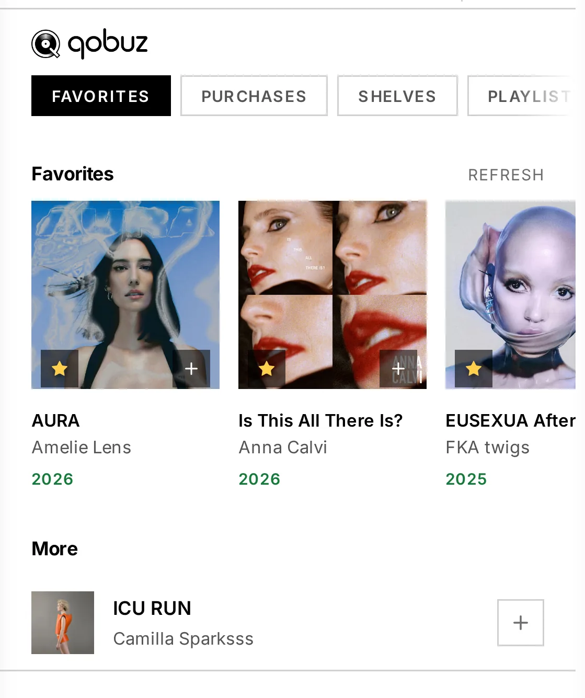

5. Library & streaming
Browse everything from one interface: your local files, your UPnP/DLNA media servers, and the streaming services — Qobuz, Tidal and HIGHRESAUDIO — side by side. Search results are directly playable, with titles and cover art. Pick a track, pick an output, and the music flows at full resolution.
How the Library tab is organised
The Library tab holds several views:
- Browse — albums for the active source, with infinite scroll.
- Search — full-text across artists, albums and tracks. Tapping an artist opens that artist's albums — across your local library, Qobuz, Tidal and HIGHRESAUDIO — with a back control to return to your results.
- Sources — pick the active source (local, streaming, Roon zone, UPnP server). Connecting or disconnecting a service updates this list straight away. Outputs never appear here: a network speaker and HQPlayer are destinations, not places to browse — they live in Outputs.
- Outputs — pick where the audio goes (see 6. Outputs & engines).
- Queue — what's playing and coming up.
Your local library
Files on your NAS or USB drive (served by MPD) appear as a browsable, searchable source — album view with infinite scroll, full-text search, queue management. You can also cast local files to a network renderer, just like a streaming service (see 6. Outputs & engines).
UPnP / DLNA media servers
In Sources, Audiogravity lists the UPnP media servers it already knows and lets you run a manual scan to discover more (e.g. MinimServer); found servers are saved automatically, and a left-swipe removes a saved server you no longer use. Browse any server's tree; results play directly, with metadata and art.
A scan only finds servers on the same network as the box. A media server on another network segment or another VLAN will not appear, however healthy it is — see 9. Troubleshooting.
Roon
Connect a Roon source in Sources; it expands to show the available zones. A dedicated Roon browser navigates the Roon library hierarchy.
Streaming services
All three deliver audio at its native resolution. Each requires your own active subscription — Audiogravity provides no access itself.
Connect them from Library → Sources: open the service's card, sign in, and the session is kept alive and refreshed for you. Each card shows its connection state and a disconnect action.
Qobuz
Tap Connect — an OAuth2 login opens; sign in and Qobuz redirects back automatically, and the card switches to Connected. Hi-Res up to 24-bit / 192 kHz, plus full search.
Browsing Qobuz
The bar carries these shelves — Favorites, Purchases, Shelves, Playlists, Genres — and each one opens a strip of its own underneath.
Shelves holds Qobuz's own selections: New Releases, All New Releases, Selection, Qobuzissims, Press Awards, Best Sellers, Most Streamed, Ideal Discography and Harmonia Mundi.
Purchases is what you have bought from Qobuz, as opposed to what you stream — their counterpart to the HIGHRESAUDIO vault. A bought album plays like any other, to your local output, to a network renderer or through HQPlayer, and it stays yours whether or not a subscription is running.
Playlists opens a second strip with two ways in: Editorial, the selections Qobuz publishes, and Mine, the playlists belonging to your account. A playlist behaves like an album — open it for its tracks or send the whole thing to the queue — and says Playlist on its card.
Genres is Qobuz's second way of arranging the same catalogue. Pick a genre and the strip becomes that genre plus its own subdivisions, with All standing for the whole genre, and the heading above the albums says where you are.
Qobuz search takes words, not filters. Type what you are looking for; there is no form to narrow a Qobuz search by genre, format or release type.
Tidal
Tidal uses the PKCE flow: tap Connect, sign in, and Tidal lands on a fixed
redirect page (tidal.com/android/login/auth?code=…) that a web app can't intercept —
so copy that full URL from the address bar, paste it back into the Tidal card and
tap Finish login. You only do this once. Lossless FLAC (HiFi / HiFi Plus), with
in-track seek.
Browsing Tidal
The bar carries these shelves — Favorites, Shelves, Playlists, Genres, Moods, Explore — each opening a strip of its own.
Shelves is Tidal's own list, so a shelf they add appears without an update to Audiogravity.
Playlists gathers Tidal's three surfaces on one strip: the selections their editors publish, the playlists on your account, and the charts — TIDAL's Top Hits and the per-genre hit lists beside it.
Genres are one level deep — Tidal publishes no sub-genres — so this strip does not drill the way Qobuz's and HIGHRESAUDIO's do.
Moods holds playlists and never albums, which is how Tidal files them.
Explore opens Tidal's own navigation: HiRes, the decades, the record labels and their full genre pages. A page there holds either further pages, which the strip drills in place the way the genres do, or sections of content, which open on a strip of their own.
Tidal sells nothing, so there is no Purchases shelf as there is on Qobuz and HIGHRESAUDIO.
HIGHRESAUDIO
Simpler still — enter your account email and password directly in the card: no redirect, no copy-paste. Native-master FLAC up to 24-bit / 352.8 kHz. Your password is stored encrypted on the device.
One device per HRA account. HIGHRESAUDIO allows a single active device — connecting Audiogravity signs you out of your other HRA players.
Browsing HIGHRESAUDIO
The bar carries these shelves — Favorites, Vault, Categories, Charts, Playlists, Labels, Genres — and each one opens a strip of its own underneath.
Categories holds the shop categories HIGHRESAUDIO publishes. The list comes from them, so a category they add appears without an update to Audiogravity.
Charts is the ranking their own front page shows.
Labels is the imprints HIGHRESAUDIO names — 2L and audite among them. Several serve the same albums as the matching … Highlights category.
Vault is what you have bought from HIGHRESAUDIO, as opposed to what you stream. The albums play in full without being downloaded, like any other — to your local output, to a network renderer, through HQPlayer — and they stay yours whether or not a subscription is running.
That last point has a consequence worth knowing: an account that only ever bought albums, with no subscription at all, signs in perfectly well and is offered the Vault alone — the shop, the favourites, the genres and the playlists all need a subscription. The sources card says as much next to the account name.
Genres is HIGHRESAUDIO's second way of arranging the same catalogue. Pick a genre and the strip becomes that genre plus its own subdivisions, with All standing for the whole genre. The heading above the albums says where you are — Soundtrack · Original Score.
Playlists opens the same second strip with four ways in: Editorial, the selections HIGHRESAUDIO publishes, Mine, the playlists belonging to your account, and Genre and Theme, the two ways HIGHRESAUDIO files those same editorial selections. A playlist behaves like an album — open it to see its tracks, or send the whole thing to the queue in one gesture — and says Playlist on its card, so a selection is never mistaken for a record. Creating or editing playlists is not available: what HIGHRESAUDIO has made is readable, what you make stays where you made it.
The editorial collection is large, so a third strip sorts it onto HIGHRESAUDIO's own shelves — New Releases, Recommended, Popular and Moods — with All at the front, where it opens. Keep All in mind: some of the older selections are filed under no shelf at all, and it is the only view that holds them.
Narrowing a HIGHRESAUDIO search
Under the search box, Advanced search unfolds the form HIGHRESAUDIO's own application offers, criterion for criterion: Artist, Composer, Label, Year, Format, Mood, and the order results come back in. The eighth criterion is the search box itself — the words you type — so there is one text field, not two.
A criterion is a search on its own: you can leave the box empty, ask for the label ECM and press Search. The form is applied by that button rather than as you type, because a filtered search is the one slow thing HIGHRESAUDIO does — the first time a given search is asked it can take the better part of a minute, and a second or two every time after. If it takes too long the screen says so and invites you to ask again, which usually answers at once.
Three things behave the way HIGHRESAUDIO's catalogue behaves, and are worth knowing before they surprise you. Year is the year an album was put online, not the year it was recorded: Innuendo is a 1991 record and answers to 2026. Choosing a format makes their catalogue ignore the words typed — ask for queen in FLAC 192 and you get the same albums as for any other word — which is what their own application does too. And a mood currently changes nothing: the same albums come back with it and without it.
An order arranges an answer, it does not produce one: choosing one on its own returns nothing, and the form says so rather than searching.
Favorites — star an album from the app
On Qobuz, Tidal and HIGHRESAUDIO albums, a star — on the album card in the browse grid and on search results — adds the album to (or removes it from) your favorites on that service, with one tap. The star is filled when the album is already a favorite, updates instantly, and stays in sync between browsing and search.

Subscriptions at a glance
| Service | For Hi-Res you need | Without it |
|---|---|---|
| Qobuz | Qobuz Studio or Sublime | you stay signed in; every track plays as a 30-second excerpt |
| Tidal | Tidal HiFi or HiFi Plus | the same — 30 seconds per track, whatever quality is set |
| HIGHRESAUDIO | an active HIGHRESAUDIO subscription | the catalogue is refused; your Vault still plays in full |
When a subscription ends
None of the three locks you out, and that is the confusing part: the service keeps signing you in, the catalogue keeps browsing, and pressing play still produces sound. Qobuz and Tidal simply serve a thirty-second excerpt of each track — at any quality setting, so nothing about the setting explains it. Audiogravity cannot tell that from a very short song either.
So the sources card says it, under the account name: No subscription · 30-second previews for Qobuz and Tidal, purchases only, no subscription for
HIGHRESAUDIO. It is read again from the service from time to time rather than
remembered from the day you signed in — the line is still right the day the plan
lapses.
Internet radio
Internet radio is a first-class source — stations flow through the same transport as your FLAC library, route to the same output, and show the same hi-fi readout. The radio view has three sub-tabs:
- My Live Radio — your own collection (custom stations + saved hits). The default tab; it hosts the Add custom station form. A brand-new box arrives with a few starter stations (FIP, Classic Vinyl HD…) already here — keep them or remove them. An upgrade never touches your collection.
- Favorites — your starred stations.
- Search — a query box with country, genre and Hi-Res filters, backed by the Radio Browser catalogue.
On each station card: tap to play, the star toggles Favorites, the + toggles My Live Radio, the pencil edits a custom station, and a left-swipe removes it from the current list.
Where the stations come from, and what is sent back
Search results come from Radio Browser, a free, community-run catalogue that Audiogravity does not operate. When it is unavailable — which does happen — search stops working until it is back. Your own stations are unaffected: My Live Radio and Favorites are stored on your box and keep playing regardless, and a search you have already run keeps showing its last results while the catalogue is unreachable, for up to a day.
That catalogue ranks stations by how often they are played, and Audiogravity sorts your search results by that ranking. In return it asks the software using it to report each play, so when you start a station its identifier is sent to Radio Browser — and nothing else: no account, no listening history, no information about you or your box. Stations you added by hand are never reported, and neither is a station that failed to start.
If you would rather nothing left your box at all, set RADIO_REPORT_PLAYS=false in
/opt/audiogravity/core/.env and restart the core
(sudo systemctl restart ag-core-server). Search and playback are unchanged by this;
only the report stops.
Roon, HQPlayer, AirPlay, Qobuz, Tidal and HIGHRESAUDIO, and their respective logos, are trademarks of their respective owners. Audiogravity is not affiliated with, endorsed by, or sponsored by any of them: it interoperates with their software as a client, and each remains the property of its owner.